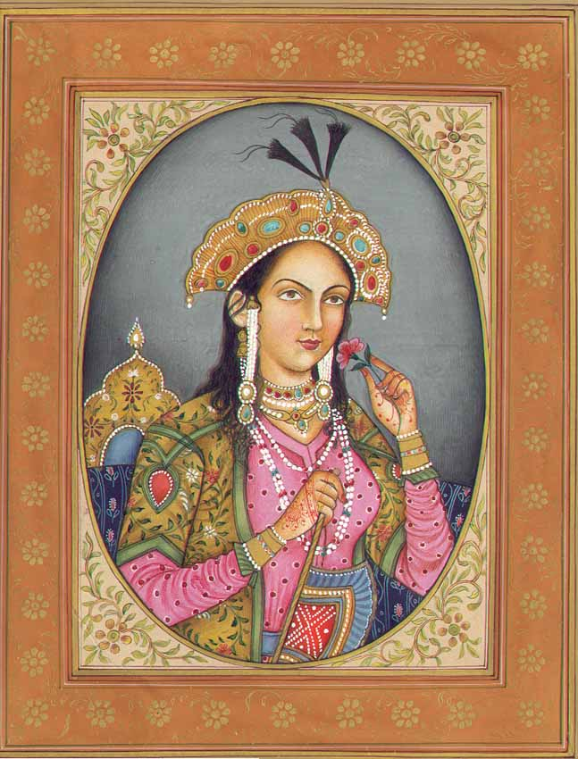
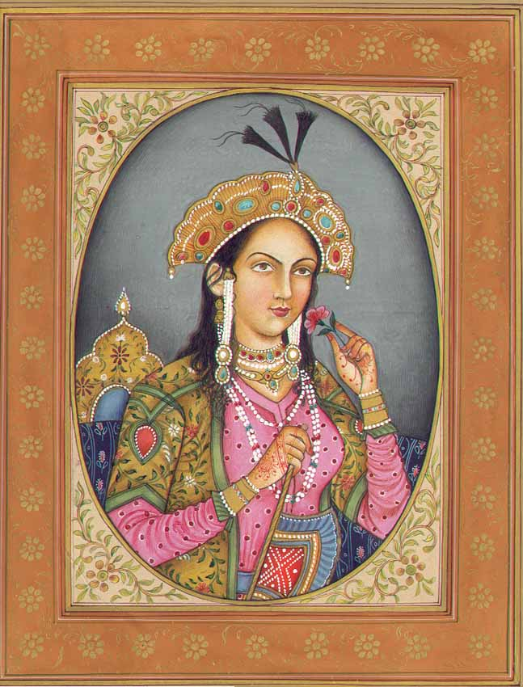

TAJ MAHAL
Introduction
The Taj Mahal was commissioned by Shah Jahan in 1631, to be built in the memory of his wife Mumtaz Mahal, who died on 17 June that year, while giving birth to their 14th child, Gauhara Begum. Construction started in 1632,and the mausoleum was completed in 1648, while the surrounding buildings and garden were finished five years later.The imperial court documenting Shah Jahan's grief after the death of Mumtaz Mahal illustrates the love story held as the inspiration for the Taj Mahal.
 

Architecture and design
The Taj Mahal incorporates and expands on design traditions of Indo-Islamic and earlier Mughal architecture. Specific inspiration came from successful Timurid and Mughal buildings including the Gur-e Amir (the tomb of Timur, progenitor of the Mughal dynasty, in Samarkand), Humayun's Tomb which inspired the Charbagh gardens and hasht-behesht (architecture) plan of the site, Itmad-Ud-Daulah's Tomb (sometimes called the Baby Taj), and Shah Jahan's own Jama Masjid in Delhi. While earlier Mughal buildings were primarily constructed of red sandstone, Shah Jahan promoted the use of white marble inlaid with semi-precious stones. Buildings under his patronage reached new levels of refinement.

Construction
The Taj Mahal is built on a parcel of land to the south of the walled city of Agra. Shah Jahan presented Maharajah Jai Singh with a large palace in the centre of Agra in exchange for the land.[42] An area of roughly 1.2 hectares (3 acres) was excavated, filled with dirt to reduce seepage, and levelled at 50 metres (160 ft) above riverbank. In the tomb area, wells were dug and filled with stone and rubble to form the footings of the tomb. Instead of lashed bamboo, workmen constructed a colossal brick scaffold that mirrored the tomb. The scaffold was so enormous that foremen estimated it would take years to dismantle.
The Taj Mahal was constructed using materials from all over India and Asia. It is believed over 1,000 elephants were used to transport building materials. It took the efforts of 22,000 labourers, painters, embroidery artists and stonecutters to shape the Taj Mahal.[44] The translucent white marble was brought from Makrana, Rajasthan, the jasper from Punjab, jade and crystal from China. The turquoise was from Tibet and the Lapis lazuli from Afghanistan, while the sapphire came from Sri Lanka and the carnelian from Arabia. In all, twenty-eight types of precious and semi-precious stones were inlaid into the white marble.
THANK YOU